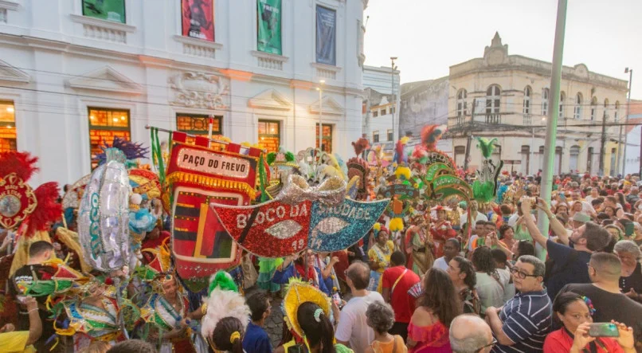
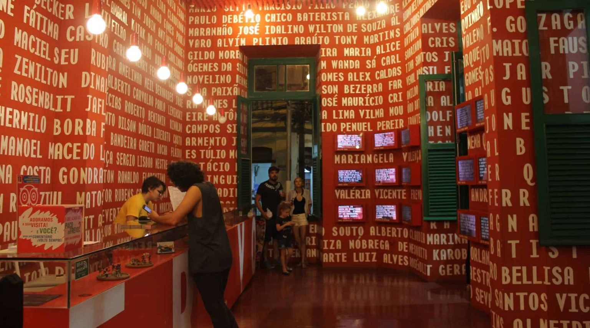

A Praça do Frevo é um espaço cultural que celebra a música e a dança do frevo, um dos ritmos mais tradicionais de Pernambuco.
O Museu do Frevo é dedicado à preservação da cultura do frevo, com exposições sobre sua história e importância na cultura pernambucana.
 Voltar para o Marco Zero